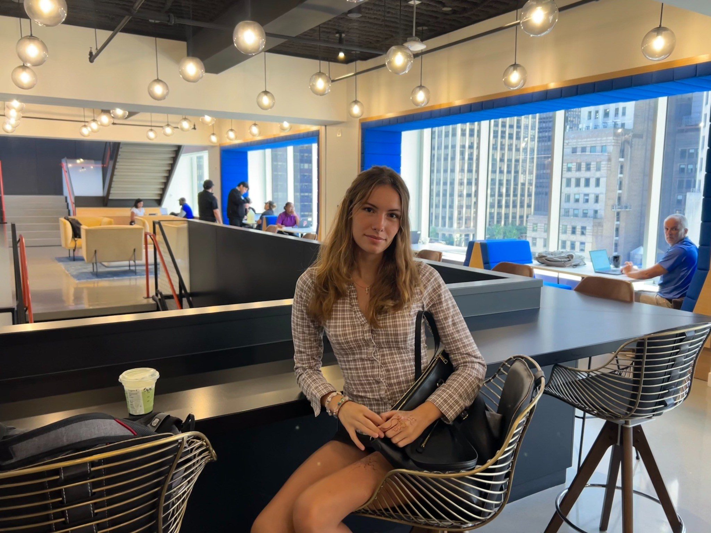

Women in Business
Director of Operations for a 300-member student organization; built a full-stack AI-enabled application to streamline engagement tracking.
International Business student at UC San Diego exploring strategy, operations, and people-centered problem-solving.
Explore my experience
I'm Mila Kalezic, an International Business student at UC San Diego with a passion for strategy, operations, and understanding what drives people and organizations. As Director of Operations for UCSD Women in Business, I help manage a 300-member organization and independently developed an AI-powered application to streamline member engagement tracking. I have also founded a jewelry business, supported business operations, and published research on international affairs.
Director of Operations for a 300-member student organization; built a full-stack AI-enabled application to streamline engagement tracking.
Founded a jewelry business, designed 400+ bracelet styles, and secured retail store partnerships across the East Bay.
Supported performance tracking, client-facing accounting operations, and sales presentations.
Asking better questions and turning complex challenges into clear possibilities.
Understanding how people think, choose, and act.
Bringing structure, communication, and momentum to shared goals.
Finding practical ways to make processes and experiences better.
I'm energized by new perspectives, meaningful collaboration, and the opportunity to turn ideas into progress.
Interested in connecting about opportunities, ideas, or collaboration?
Connect with me ↗